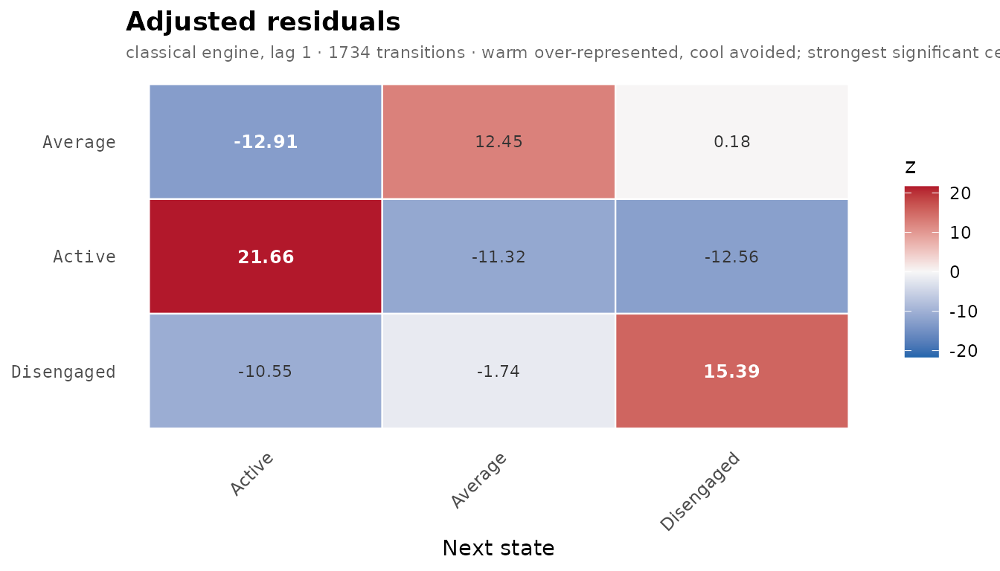
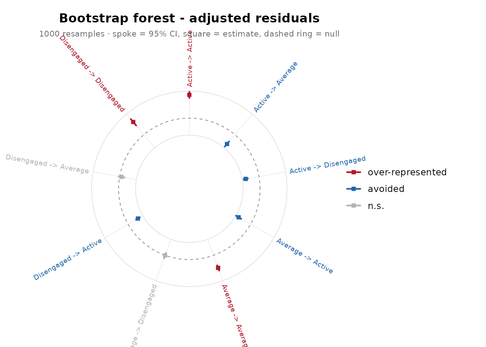

Case study: the dynamics of course engagement
Written by Mohammed Saqr and Sonsoles López-Pernas
Source:vignettes/articles/case-engagement.Rmd
case-engagement.RmdEngagement in a course is not a fixed trait. A student who is active in one week may be average in the next and disengaged after that, and the value of an engagement measure for teaching lies largely in what it says about the weeks that follow. Two questions matter most. How persistent is each state: once a student is disengaged, how likely is the student to stay so? And which moves between states are more or less common than the overall frequency of the states would predict: do disengaged students return to active engagement directly, or only through an intermediate state?
Lag sequential analysis answers both. For every ordered pair of states it compares the observed number of transitions with the number expected if the next state did not depend on the current one, and it expresses the difference as an adjusted residual (Bakeman & Quera, 2011; Haberman, 1973). A positive residual marks a transition that occurs more often than the base rates of its two states predict, a negative residual one that is avoided. This case study asks how persistent each engagement state is, which transitions are over- or under-represented, whether the structure holds when the states are two and three weeks apart, and how certain and how stable the key transitions are.
Data
engagement is a synthetic data set of weekly engagement
states, derived from the trajectories example of the
Nestimate package. It is in wide format, one row per student and one
column per week.
- Sequence: one row, one student.
- Time: the 15 columns, weeks 1 to 15, in order.
-
State:
Active,AverageorDisengaged;NAmarks a week without an observation.
dim(engagement)
#> [1] 138 15
table(unlist(engagement), useNA = "ifany")
#>
#> Active Average Disengaged <NA>
#> 703 813 354 200
table(observed_weeks = rowSums(!is.na(engagement)))
#> observed_weeks
#> 0 1 2 4 7 8 9 11 12 14 15
#> 2 5 2 4 1 1 1 1 1 2 118The 138 rows hold 1,870 observed weeks and 200 missing ones. Two rows
are empty and contribute nothing, 118 students are observed in all 15
weeks, and the remaining 18 between 1 and 14 weeks. Average
is the most frequent state (813 weeks), followed by Active
(703) and Disengaged (354). Missing weeks are dropped and
no transition is counted into or out of them.
lsa() reads the wide frame directly and fits the
classical lag-1 model.
fit <- lsa(engagement)
as.data.frame(summary(fit))
#> engine lag n_states n_sequences n_events n_transitions n_significant alpha lrx2
#> 1 classical 1 3 136 1870 1734 7 0.05 618
#> lrx2_df lrx2_p x2 x2_df x2_p
#> 1 4 1.69e-132 629 4 7.41e-135The fit uses 136 sequences, 1,870 events and 1,734 week-to-week transitions. The likelihood-ratio test of independence gives G² = 618 on 4 degrees of freedom (p < 1e-100): next week’s state depends strongly on this week’s, and 7 of the 9 transitions depart significantly from independence.
How persistent is each state?
Persistence is the probability of staying in a state from one week to the next, the diagonal of the transition-probability table.
transition_probabilities(fit)
#> from to prob
#> 1 Active Active 0.698
#> 2 Active Average 0.267
#> 3 Active Disengaged 0.035
#> 4 Average Active 0.204
#> 5 Average Average 0.610
#> 6 Average Disengaged 0.186
#> 7 Disengaged Active 0.120
#> 8 Disengaged Average 0.397
#> 9 Disengaged Disengaged 0.483Active is the most persistent state: 69.8% of active
weeks are followed by another active week. Average persists
with probability 0.610 and Disengaged with 0.483. The
probabilities alone mislead about disengagement, because
Disengaged is the rarest state. The residual of each
self-transition measures persistence against what the base rates
predict.
transitions(fit, direction = "over", sort = "strength")
#> from to lag count expected prob prob_col adj_res p yules_q kappa
#> 1 Active Active 1 459 247 0.698 0.705 21.7 4.60e-104 0.828 0.444
#> 2 Disengaged Disengaged 1 157 60 0.483 0.491 15.4 1.90e-53 0.754 0.314
#> 3 Average Average 1 458 330 0.610 0.600 12.5 1.35e-35 0.553 0.227
#> kappa_z kappa_p lift sign significant
#> 1 19.19 4.68e-82 1.86 over TRUE
#> 2 13.56 7.34e-42 2.62 over TRUE
#> 3 9.83 7.97e-23 1.39 over TRUEAll three self-transitions are over-represented, and no transition
between two different states is. Active to
Active has the largest residual (z = 21.7, 459 observed
against 247 expected), but Disengaged to
Disengaged has the largest lift: it occurs 2.62 times as
often as expected (157 against 60), compared with 1.86 for
Active and 1.39 for Average. Relative to how
rare it is, disengagement is the stickiest state. Yule’s Q, which does
not grow with sample size, ranks the same way: 0.828 for
Active, 0.754 for Disengaged and 0.553 for
Average.
Which transitions are over- or under-represented?
The under-represented transitions are the moves that students avoid.
transitions(fit, direction = "under", sort = "strength")
#> from to lag count expected prob prob_col adj_res p yules_q kappa
#> 1 Average Active 1 153 282 0.204 0.2350 -12.9 4.16e-38 -0.601 -0.499
#> 2 Active Disengaged 1 23 121 0.035 0.0719 -12.6 3.64e-36 -0.826 -0.827
#> 3 Active Average 1 176 290 0.267 0.2307 -11.3 1.06e-29 -0.534 -0.424
#> 4 Disengaged Active 1 39 122 0.120 0.0599 -10.5 5.11e-26 -0.698 -0.707
#> kappa_z kappa_p lift sign significant
#> 1 -14.7 6.81e-49 0.543 under TRUE
#> 2 -13.4 5.14e-41 0.189 under TRUE
#> 3 -12.5 9.39e-36 0.608 under TRUE
#> 4 -11.5 2.03e-30 0.320 under TRUEFour of the six moves between different states are avoided. The
strongest avoidance is Average to Active (z =
-12.9), followed by Active to Disengaged (z =
-12.6): only 23 active weeks, 3.5%, are followed by a disengaged week,
against 121 expected (lift 0.19, Yule’s Q = -0.826).
Disengaged to Active is avoided as well (39
observed, 122 expected). The two moves through Average,
Disengaged to Average (z = -1.74, p = 0.083)
and Average to Disengaged (z = 0.18, p =
0.86), occur about as often as chance predicts.
The structure is therefore a graded one. Students rarely jump between
the two extreme states in either direction; when they leave an extreme
state, they pass through Average, and the moves into and
out of Average from Disengaged are neither
favoured nor avoided. A residual heatmap shows the whole table at
once.
plot(fit)
Each tile is one transition, the current state in rows and the next
state in columns, labelled and coloured by its adjusted residual on a
diverging scale: red above expectation, blue below. The three red tiles
are the persistence of each state; the blue tiles between
Active and Disengaged are the avoided jumps
between the extremes; the two near-white tiles, Average to
Disengaged (0.18) and Disengaged to
Average (-1.74), are the transitions at chance level.
Is the structure the same at lags 2 and 3?
A lag-1 pattern can hide a different pattern over longer intervals: a
student may avoid moving from Active to
Disengaged in one week but drift there over two or three.
lsa_lags() fits the same model at several lags, pairing
each week with the week one, two and three steps later.
lags <- lsa_lags(engagement, lags = 1:3)
lags
#> <lsa_lags>
#> engine: classical
#> lags: 1, 2, 3
#> lag 1 7 of 9 transitions significant
#> lag 2 8 of 9 transitions significant
#> lag 3 8 of 9 transitions significantThe number of significant transitions rises from 7 of 9 at lag 1 to 8
of 9 at lags 2 and 3. lag_profile() follows one transition
across the lags. The first two profiles are the persistence of the
extreme states.
lag_profile(lags, from = "Active", to = "Active")
#> lag from to count prob adj_res p significant
#> 1 1 Active Active 459 0.698 21.7 4.60e-104 TRUE
#> 2 2 Active Active 409 0.664 18.7 5.20e-78 TRUE
#> 3 3 Active Active 359 0.631 16.0 7.53e-58 TRUE
lag_profile(lags, from = "Disengaged", to = "Disengaged")
#> lag from to count prob adj_res p significant
#> 1 1 Disengaged Disengaged 157 0.483 15.39 1.90e-53 TRUE
#> 2 2 Disengaged Disengaged 144 0.497 15.18 5.17e-52 TRUE
#> 3 3 Disengaged Disengaged 98 0.363 8.63 6.25e-18 TRUEActive engagement decays slowly: the probability of being active three weeks after an active week is still 0.631 (z = 16.0). Disengagement holds for two weeks (0.483 at lag 1, 0.497 at lag 2) and then falls to 0.363 at lag 3, with the residual dropping from 15.2 to 8.6. Both states remain strongly over-represented at lag 3.
lag_profile(lags, from = "Active", to = "Disengaged")
#> lag from to count prob adj_res p significant
#> 1 1 Active Disengaged 23 0.0350 -12.56 3.64e-36 TRUE
#> 2 2 Active Disengaged 33 0.0536 -10.65 1.77e-26 TRUE
#> 3 3 Active Disengaged 35 0.0615 -9.42 4.68e-21 TRUE
lag_profile(lags, from = "Disengaged", to = "Active")
#> lag from to count prob adj_res p significant
#> 1 1 Disengaged Active 39 0.120 -10.55 5.11e-26 TRUE
#> 2 2 Disengaged Active 37 0.128 -9.70 3.08e-22 TRUE
#> 3 3 Disengaged Active 39 0.144 -8.69 3.74e-18 TRUEThe avoided jumps between the extremes stay avoided at every lag. The
share of active weeks followed by disengagement rises from 3.5% at lag 1
to 6.2% at lag 3, and the share of disengaged weeks followed by activity
from 12.0% to 14.4%, but all six residuals are below -8.6. The two moves
through Average are the only unstable part of the
structure.
lag_profile(lags, from = "Average", to = "Disengaged")
#> lag from to count prob adj_res p significant
#> 1 1 Average Disengaged 140 0.186 0.176 0.8605 FALSE
#> 2 2 Average Disengaged 118 0.169 -1.335 0.1818 FALSE
#> 3 3 Average Disengaged 133 0.209 2.518 0.0118 TRUE
lag_profile(lags, from = "Disengaged", to = "Average")
#> lag from to count prob adj_res p significant
#> 1 1 Disengaged Average 129 0.397 -1.74 0.0825 FALSE
#> 2 2 Disengaged Average 109 0.376 -2.38 0.0174 TRUE
#> 3 3 Disengaged Average 133 0.493 1.79 0.0735 FALSETheir residuals lie between -2.38 and 2.52 and change sign across the lags; each reaches p < 0.05 at one lag only. With 1,734 transitions, residuals of this size are near the significance threshold, and the significance flag flips with small changes in the counts. These are the transitions that change the count of significant cells from 7 to 8; the rest of the structure is the same at all three lags.
How certain are the key transitions?
A residual from a single fit says nothing about how much it would
vary in another sample of students. bootstrap_lsa()
resamples whole students with replacement, which keeps each student’s
weeks together, refits the model and returns percentile intervals for
every transition. The analysis uses R = 1,000 resamples.
set.seed(2026)
boot <- bootstrap_lsa(fit, R = 1000)
boot
#> <lsa_bootstrap>
#> engine: classical
#> level: sequence
#> replicates: 1000
#> CI level: 95%
#> stable edges: 7 of 9
transitions(boot, significant = TRUE, sort = "strength")
#> from to observed count_mean count_se count_ci_low count_ci_high
#> 1 Active Active 459 461.1 52.50 360 568
#> 2 Disengaged Disengaged 157 156.1 28.06 106 213
#> 3 Average Active 153 152.8 14.79 124 182
#> 4 Active Disengaged 23 22.7 4.99 14 32
#> 5 Average Average 458 458.8 39.30 383 532
#> 6 Active Average 176 175.9 15.78 146 207
#> 7 Disengaged Active 39 38.8 6.34 27 52
#> adj_res_observed adj_res_mean adj_res_se adj_res_ci_low adj_res_ci_high adj_res_p_boot
#> 1 21.7 21.6 1.55 18.65 24.61 0
#> 2 15.4 15.3 1.96 11.10 18.95 0
#> 3 -12.9 -12.9 1.52 -15.79 -9.99 0
#> 4 -12.6 -12.5 1.06 -14.68 -10.42 0
#> 5 12.5 12.5 1.37 9.84 15.16 0
#> 6 -11.3 -11.3 1.63 -14.48 -8.21 0
#> 7 -10.5 -10.5 1.12 -12.69 -8.47 0
#> adj_res_stable prob_observed prob_mean prob_ci_low prob_ci_high yules_q_observed
#> 1 TRUE 0.698 0.6974 0.6371 0.752 0.828
#> 2 TRUE 0.483 0.4800 0.3846 0.564 0.754
#> 3 TRUE 0.204 0.2041 0.1623 0.247 -0.601
#> 4 TRUE 0.035 0.0346 0.0205 0.049 -0.826
#> 5 TRUE 0.610 0.6102 0.5640 0.655 0.553
#> 6 TRUE 0.267 0.2680 0.2159 0.323 -0.534
#> 7 TRUE 0.120 0.1209 0.0818 0.166 -0.698
#> yules_q_mean yules_q_ci_low yules_q_ci_high
#> 1 0.826 0.760 0.882
#> 2 0.750 0.633 0.834
#> 3 -0.601 -0.700 -0.489
#> 4 -0.826 -0.900 -0.745
#> 5 0.553 0.451 0.648
#> 6 -0.533 -0.649 -0.408
#> 7 -0.696 -0.794 -0.586The same 7 transitions are significant in the resamples as in the
fit. The 95% interval of the residual excludes zero for every one of
them, and every interval is far from zero: the closest is
Active to Average, whose upper bound is -8.21.
The persistence of disengagement has the widest interval (11.1 to 19.0),
because it depends on a few students who stay disengaged for many weeks.
The probability intervals make the same point on the probability scale:
staying disengaged has probability 0.483 with a 95% interval of 0.385 to
0.564.
A circular forest plot draws the residual interval of every transition.
plot_forest(boot)
Each spoke is one transition and spans its bootstrap interval, the
square marks the observed residual and the dashed ring is zero. The
intervals are short relative to their distance from the ring: the three
red (over-represented) and four blue (avoided) transitions lie well away
from it, and the two grey ones, the moves between Average
and Disengaged, sit on it.
certainty_lsa() gives a closed-form answer to a narrower
question: how precisely is each transition probability estimated, given
the counts? It places a Dirichlet posterior on each row of the table and
flags a transition as certain when its posterior stays within 25% of the
observed probability.
certainty_lsa(fit) |> transitions(sort = "strength")
#> from to observed prob_observed prob_mean prob_se prob_ci_low prob_ci_high
#> 1 Active Active 459 0.698 0.6967 0.01789 0.6611 0.731
#> 2 Disengaged Disengaged 157 0.483 0.4824 0.02761 0.4284 0.537
#> 3 Average Active 153 0.204 0.2040 0.01468 0.1760 0.233
#> 4 Active Disengaged 23 0.035 0.0356 0.00721 0.0229 0.051
#> 5 Average Average 458 0.610 0.6093 0.01777 0.5742 0.644
#> 6 Active Average 176 0.267 0.2676 0.01723 0.2345 0.302
#> 7 Disengaged Active 39 0.120 0.1210 0.01802 0.0879 0.158
#> 8 Disengaged Average 129 0.397 0.3966 0.02703 0.3443 0.450
#> 9 Average Disengaged 140 0.186 0.1867 0.01420 0.1597 0.215
#> p_value stable adj_res_observed adj_res_stable
#> 1 5.56e-20 TRUE 21.663 TRUE
#> 2 9.44e-06 TRUE 15.390 TRUE
#> 3 6.06e-04 TRUE -12.906 TRUE
#> 4 2.19e-01 FALSE -12.557 FALSE
#> 5 3.14e-17 TRUE 12.453 TRUE
#> 6 1.21e-04 TRUE -11.319 TRUE
#> 7 9.45e-02 FALSE -10.549 FALSE
#> 8 2.23e-04 TRUE -1.736 TRUE
#> 9 1.17e-03 TRUE 0.176 TRUESeven of the nine probabilities are pinned to within 25%. The two
that are not are the rare cross-extreme moves. Active to
Disengaged has a 95% credible interval of 0.023 to 0.051
around 0.035, and Disengaged to Active one of
0.088 to 0.158 around 0.120. Both are certainly rare, and the residuals
are certainly negative, but their exact probability is known only to
within a factor of about two. Any claim of the form “one disengaged week
in eight is followed by an active one” rests on these wider
intervals.
How stable is the structure?
Stability asks whether the significance pattern survives when part of
the sample is removed. stability_lsa() draws R = 500
subsamples of 80% of the students without replacement, refits the model
on each and records how often each transition stays significant.
set.seed(2026)
stab <- stability_lsa(fit, R = 500)
stab
#> <lsa_stability>
#> engine: classical
#> replicates: 500
#> proportion: 80%
#> min stable: 95%
#> failed: 0 of 500 replicates
#> stable edges: 7 of 9 (>= 95% across replicates)
transitions(stab, sort = "strength")
#> from to observed_sig stability stable
#> 1 Active Active TRUE 1.000 TRUE
#> 2 Average Active TRUE 1.000 TRUE
#> 3 Disengaged Active TRUE 1.000 TRUE
#> 4 Active Average TRUE 1.000 TRUE
#> 5 Average Average TRUE 1.000 TRUE
#> 6 Active Disengaged TRUE 1.000 TRUE
#> 7 Disengaged Disengaged TRUE 1.000 TRUE
#> 8 Disengaged Average FALSE 0.256 FALSE
#> 9 Average Disengaged FALSE 0.004 FALSEThe 7 significant transitions are significant in every one of the 500
subsamples (stability 1.000). Disengaged to
Average is significant in a quarter of them and
Average to Disengaged almost never, which
matches their unstable behaviour across lags.
reliability_lsa() splits the students at random into two
halves, fits the model on each half and correlates the two tables of
transition probabilities. It repeats the split R = 200 times.
set.seed(2026)
rel <- reliability_lsa(fit, R = 200)
as.data.frame(rel, what = "summary")
#> weights method R n_failed mean sd ci_low ci_high
#> 1 prob pearson 200 0 0.968 0.0261 0.885 0.996The mean split-half correlation is 0.968 with a 95% interval of 0.885 to 0.996, and no replicate failed. Two disjoint halves of 68 students each reproduce nearly the same transition table.
What the analysis shows
- Engagement is persistent. Each state is more likely to be followed
by itself than its frequency predicts;
Activepersists with probability 0.698 andDisengaged, the rarest state, has the highest lift (2.62). - Students do not jump between the extremes.
ActivetoDisengagedandDisengagedtoActiveare strongly avoided at lags 1, 2 and 3. Moves out of an extreme state run throughAverage. - The persistence of disengagement weakens after two weeks (probability 0.497 at lag 2, 0.363 at lag 3), while active engagement decays slowly (0.631 at lag 3).
- Every significant transition has a bootstrap interval (R = 1,000)
that excludes zero and is significant in all 500 subsamples, and split
halves of the students agree with a mean correlation of 0.968. The two
moves between
AverageandDisengagedare at chance level, and their significance flag is not stable.
The analysis has limits. The data are synthetic, so the results illustrate the method rather than describe real students. The model is first order and pools all students and all weeks: it assumes the same transition structure in week 2 and in week 14, and for every student. A student-level or week-level difference would need a grouped fit and a group comparison (see the group comparison article). The residuals and their tests treat transitions as independent; the bootstrap and the subsampling resample whole students and do not rely on that assumption, and they agree with the fit here. For the interpretation of residuals and the choice of lags, see the lag sequential analysis article and the confirmatory article.
References
Bakeman, R., & Quera, V. (2011). Sequential analysis and observational methods for the behavioral sciences. Cambridge University Press.
Efron, B. (1979). Bootstrap methods: Another look at the jackknife. Annals of Statistics, 7(1), 1-26.
Epskamp, S., Borsboom, D., & Fried, E. I. (2018). Estimating psychological networks and their accuracy: A tutorial paper. Behavior Research Methods, 50(1), 195-212.
Haberman, S. J. (1973). The analysis of residuals in cross-classified tables. Biometrics, 29, 205-220.